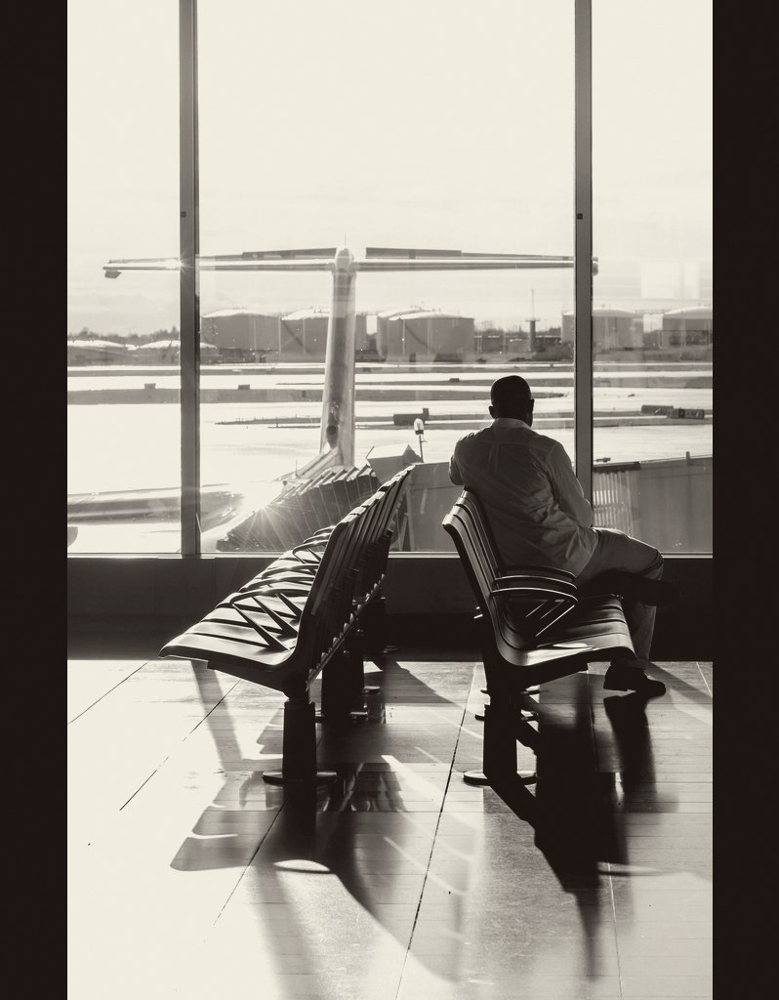
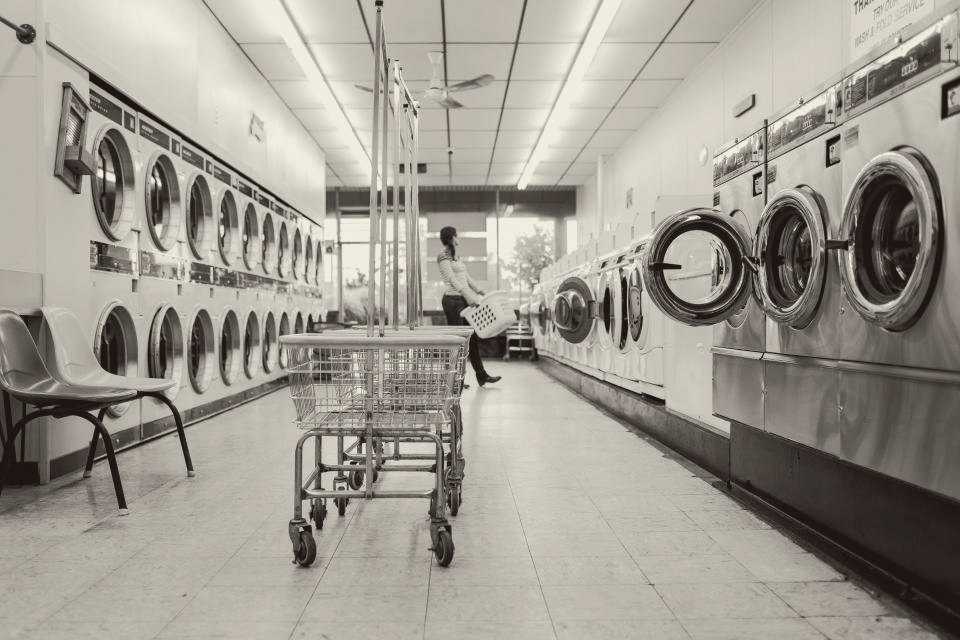
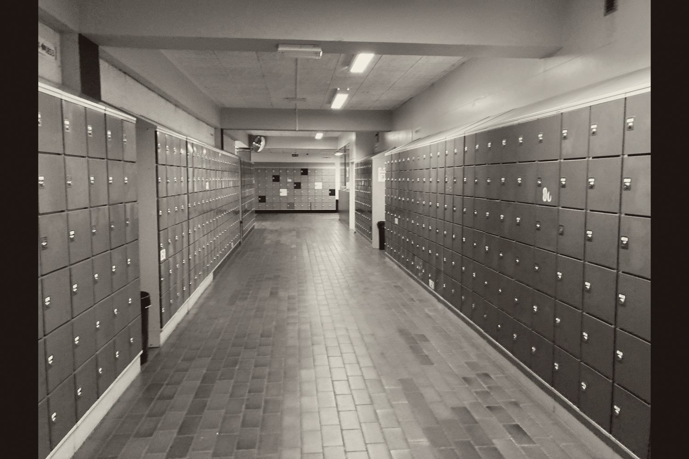
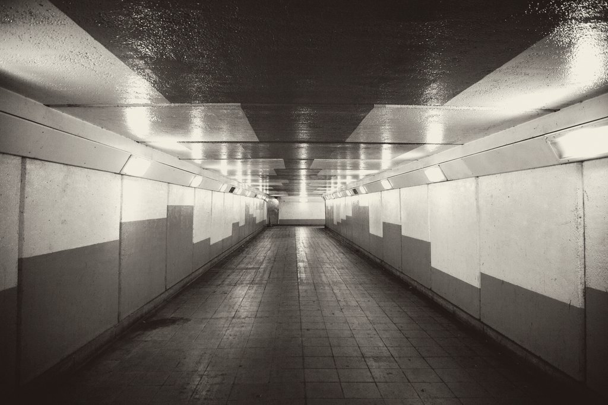

Special Report
Ordinary places
Four photographs
Public domain
Genesis 28:11 — “a certain place”
The Geography
of Nowhere
The passage begins at an unplanned stop, not a staged holy site. So does most of your week. Four places nobody photographs on purpose.



